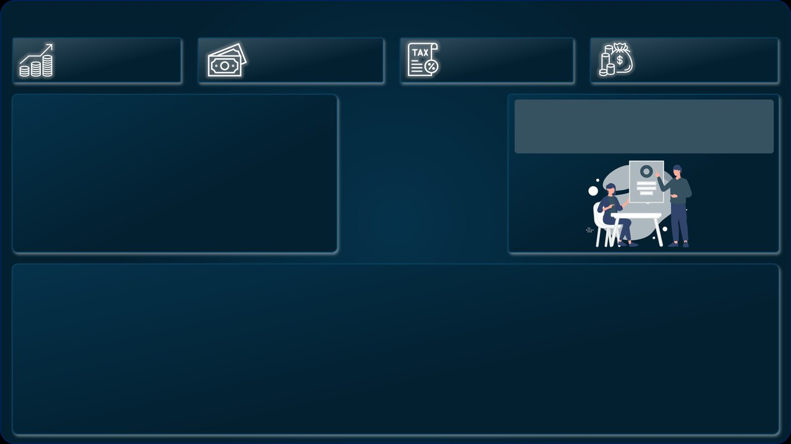

Modelagem de Dados
Modelagem de Dados


CALCULATE, de novo
A mesma ideia da aula 2: o cálculo e, depois da vírgula, o filtro. Texto entre aspas duplas, igualzinho à planilha: "Recebimento".
Um dashboard financeiro em DAX e um modelo com cinco tabelas relacionadas
Duas partes. Na primeira, um dashboard financeiro feito de medidas DAX, com três visuais personalizados. Na segunda, a modelagem de dados: cinco planilhas ligadas por relacionamentos, para um visual de uma tabela filtrar os números da outra.
Baixe antes de começar a prática. As planilhas e as imagens entram nos relatórios; os gabaritos são os relatórios prontos, para comparar com o seu no fim.

Plano de FundoParte1 - Plano de Fundo.png · 755 KBFormatar página › Tela de fundo, com Ajustar e transparência 0%. baixar GabaritoParte1 - Gabarito.pbix · 1,2 MBO Dashboard Financeiro pronto, com os visuais personalizados. Nele os Pagamentos se chamam Despesas. baixarBaseFinanceiro.xlsx · 2.725 movimentações de 2020 e 2021 · recebimentos e pagamentos em 5 bancos
A coluna Valor da Movimentação guarda entradas e saídas juntas; a coluna Tipo diz qual é qual. Com CALCULATE, a mesma soma vira duas medidas: só os recebimentos e só os pagamentos.
Nova medida, escreva e tecle Enter; Shift + Enter quebra a linhaReceita =
CALCULATE(
SUM(Movimentações[Valor da Movimentação]),
Movimentações[Tipo] = "Recebimento"
)
// R$ 94.602.866,94
Pagamentos =
-CALCULATE(
SUM(Movimentações[Valor da Movimentação]),
Movimentações[Tipo] = "Pagamento"
)
// os pagamentos vêm negativos na planilha:
// o menos na frente deixa o número positivo
A mesma ideia da aula 2: o cálculo e, depois da vírgula, o filtro. Texto entre aspas duplas, igualzinho à planilha: "Recebimento".
Formatar visual › Valor do balão › Unidades de exibição: Nenhum mostra R$ 94.602.866,94 em vez de R$ 94,60 Mi.
Escrever "Calculete" ou "Recebimentos". O DAX não conhece a função, e o filtro com uma letra a mais não acha nenhuma linha: o cartão fica em branco.
Medidas que usam medidas: o imposto é 15% da receita, e o lucro é o que sobra. O gráfico de cascata mostra o lucro mês a mês: cada coluna sobe ou desce a partir da anterior, até o total.
crie as duas medidas e marque o Lucro no gráfico de cascataImposto = [Receita] * 0.15 // no DAX o decimal é com ponto: 0,15 dá erro Lucro = [Receita] - [Pagamentos] - [Imposto] // R$ 35.548.595,98
Visualizações › Gráfico de cascata Categoria: Data da Movimentacao › Mês Eixo Y: Lucro Título: Lucro Mensal verde = mês com lucro · vermelho = prejuízo a última coluna é o Total
Na barra de fórmulas do Power BI, o número decimal se escreve 0.15 e a vírgula separa argumentos. Com 0,15, o DAX entende dois números soltos e reclama.
Ela mostra como o total foi construído: abril, junho e agosto deram prejuízo, e setembro foi o melhor mês. Num gráfico de colunas comum, o negativo some no meio.
Somar o imposto em vez de subtrair. Confira o resultado com uma conta de cabeça: 94,6 − 44,9 − 14,2 dá 35,5 milhões.
% Margem: quanto de cada real recebido vira lucro. A rosca precisa de duas fatias para mostrar uma porcentagem: a margem e o complemento, o que falta para 100%.
crie as duas medidas; na rosca, marque as duas em Valores, sem Legenda% Margem = DIVIDE([Lucro], [Receita]) // 37,58% · formato Porcentagem Complemento Margem = 1 - [% Margem] // 62,42%: as duas somam 100%
Gráfico de rosca Valores: % Margem, Complemento Margem Rótulos de detalhes: Desativado Fatias: margem escura, complemento claro Cartão: % Margem, no meio da rosca Título: Margem Lucro
Sem nada em Legenda, cada medida em Valores vira uma fatia. É o jeito de desenhar uma porcentagem só como um anel.
O cartão com fundo transparente fica em cima do buraco da rosca: o número no centro, o anel em volta.
Pôr só a % Margem na rosca: com uma fatia só, ela fecha o círculo inteiro, e 37% parece 100%.
A coluna Imagem tem o endereço do logotipo de cada banco na internet. O visual personalizado Image Grid desenha uma imagem por endereço, e clicar num logotipo filtra o dashboard por aquele banco.
marque a coluna Imagem no Image Grid e clique num bancoVisualizações › ··· › Obter mais visuais pesquise: Image Grid › Adicionar Image Grid Image URL: Imagem Formatar visual › Render type: Circle (todas as imagens em bolas do mesmo tamanho)
endereço de imagem no Google Drive: https://drive.google.com/uc?id=CÓDIGO o CÓDIGO é o trecho do link de compartilhar, com o arquivo aberto para "qualquer pessoa com o link" na planilha da aula: links do imgur.com
O Power BI não guarda a imagem: guarda o link. O visual busca a figura na internet cada vez que abre o relatório.
Clique no Itaú: os cartões mostram R$ 33.261.602,80 de receita, só desse banco. Clique de novo para limpar.
Sem internet, ou com o link fechado para quem não é dono do arquivo, o visual mostra quadros vazios. Teste o link numa janela anônima.
O visual Enlighten Data Story escreve uma frase e troca cada # por uma medida, na ordem em que elas entram no visual. O texto acompanha os filtros: escolha um banco e a frase muda.
crie as três medidas e marque na ordem; depois escolha um bancoQtd Movimentações = COUNTROWS(Movimentações)
Transações Pix =
CALCULATE(
COUNTROWS(Movimentações),
Movimentações[Forma Pagamento] = "Pix"
)
% Pix = DIVIDE([Transações Pix], [Qtd Movimentações])
Enlighten Data Story
Measures (na ordem dos #):
1. Qtd Movimentações
2. Transações Pix
3. % Pix
Text: O número de transações foi de #,
sendo # feitas via Pix, o que representa
# das movimentações.
O primeiro # recebe a primeira medida do visual, e assim por diante. Trocou a ordem, a frase fala besteira.
Diferente de uma caixa de texto, o Data Story recalcula: com o filtro de um banco, os três números passam a ser só dele.
Mais # do que medidas: os # que sobram ficam no texto como estão. Conte os # e as medidas antes de publicar.
O Scroller passa como um letreiro de bolsa: cada município com a sua margem e o desvio em relação à margem geral, com ▲ verde acima e ▼ vermelho abaixo.
crie o Desvio Margem e marque depois da % MargemDesvio Margem =
[% Margem]
- CALCULATE([% Margem], ALL(Movimentações))
// ALL tira o filtro do município:
// a segunda parte é a margem geral, 37,58%
Scroller Category: Município Measure Absolute: % Margem Measure Deviation: Desvio Margem São Paulo 63,60% ▲ 26,02% Belo Horizonte 21,45% ▼ 16,13%
Dentro do CALCULATE, ALL(Movimentações) ignora o filtro do município do letreiro. O resultado é a margem de todo mundo, a régua para comparar.
Aqui o desvio é em relação à margem geral. Com uma meta fixa, troque a segunda parte pelo número da meta: [% Margem] - 0.30.
Olhar o Desvio Margem num cartão sozinho: sem filtro de município, a margem é igual à geral e o desvio dá zero.
Tudo junto sobre o plano de fundo: o letreiro no alto, os quatro cartões, os logotipos, a rosca da margem, o texto do Pix e a cascata do lucro mensal. Clique num banco ou num mês.
clique num logotipo ou numa coluna da cascata; clique de novo para limparFormatar página › Tela de fundo Imagem: Parte1 - Plano de Fundo.png Ajustar · Transparência 0% Cartões: Receita, Pagamentos, Imposto, Lucro Tela de fundo do visual: Desativado Unidades de exibição: Nenhum texto branco
Scroller: Município · % Margem · Desvio Margem Image Grid: Imagem Rosca: % Margem + Complemento Margem com o cartão da margem no meio Data Story: o texto do Pix Cascata: Mês × Lucro · Título: Lucro Mensal
O plano de fundo já tem os ícones e as caixas: cada visual vai para o seu lugar, sem fundo próprio, como na aula 2.
Image Grid, Enlighten Data Story e Scroller vêm do AppSource. O .pbix guarda os três: o gabarito abre com eles.
Clicar num mês da cascata e estranhar os cartões: o filtro vale para a página toda, então receita, imposto e lucro passam a ser só daquele mês.
Cinco planilhas: BaseVendas (23.794 vendas), BaseDevoluções (1.140) e os cadastros de Produtos (24), Lojas (13) e Clientes (822)
Modelagem de dados é organizar as tabelas para a análise. A venda não repete o nome, o preço e a marca do produto: guarda só o SKU, e o cadastro de produtos guarda o resto, uma vez só. O relacionamento liga as duas pela chave.
Chave primária: identifica cada linha, sem repetir e sem vazio. Chave estrangeira: aponta para a chave primária de outra tabela.
a chave nas duas tabelas
BaseVendas e BaseDevoluções registram o que aconteceu (muitas linhas). Os cadastros descrevem quem e o quê (poucas linhas). As setas sempre saem do cadastro para a base.
Mudou o preço de um produto? Muda uma linha no cadastro, e não cada venda daquele produto. E o arquivo fica menor.
Usar como chave uma coluna que se repete no cadastro, como Marca ou Tipo. Chave primária não pode ter dois produtos com o mesmo valor.
A cardinalidade diz quantos registros de um lado combinam com quantos do outro. Ela decide para que lado vai a chave estrangeira.
As cores ligam os registros: mesma cor, mesma chave.
definição e chave estrangeira
O modelo mostra 1 do lado do cadastro e * (muitos) do lado da base. A seta no meio da linha mostra para onde o filtro anda.
Quase toda relação de um relatório é 1 para N: um produto, muitas vendas; uma loja, muitas devoluções.
Ligar duas bases direto, como BaseVendas e BaseDevoluções pela Loja: as duas repetem a loja, e a relação vira muitos para muitos. Ligue cada base ao cadastro.
Antes de relacionar, as cinco planilhas passam pelo Power Query. A BaseDevoluções chega com cinco colunas vazias no fim (Column5 a Column9); as outras quatro estão limpas.
Ctrl + clique seleciona várias colunas de uma vezObter dados › Excel: as cinco planilhas no Navegador, marque todas › Transformar Dados BaseDevoluções: clique em Column5, Ctrl + clique até Column9 Página Inicial › Remover Colunas Remover Linhas › Remover Linhas em Branco Fechar e Aplicar
= Table.RemoveColumns(#"Tipo Alterado",
{"Column5", "Column6", "Column7",
"Column8", "Column9"})
Ctrl + clique soma colunas à seleção; Shift + clique pega um intervalo. Uma etapa só remove todas.
Clientes, Lojas, Produtos e Vendas chegam sem colunas nem linhas sobrando. Mesmo assim, olhe a qualidade de cada coluna antes de Fechar e Aplicar.
Deixar as colunas vazias: elas não quebram nada, mas aparecem no painel Dados e no modelo, e confundem na hora de relacionar.
Os cadastros também ganham colunas calculadas. Na planilha, Lucro, Categoria de Cliente e Promoção do Dia das Mães já vêm prontas; aqui você reescreve as três em DAX e confere se dão o mesmo resultado em todas as linhas.
clique na tabela no painel Dados antes de Nova coluna: a coluna nasce nela// CadastroProdutos
Lucro Calculado =
CadastroProdutos[Preco Unitario]
- CadastroProdutos[Custo Unitario]
// CadastroClientes: um IF dentro do outro
Categoria Calculada =
IF(CadastroClientes[Idade do Cliente] < 45, "Jovem",
IF(CadastroClientes[Idade do Cliente] < 60, "Adulto",
"Idoso"))
// CadastroClientes: as duas condições juntas
Promoção Calculada =
IF(
AND(CadastroClientes[Gênero] = "Feminino",
CadastroClientes[Nº de Filhos] > 0),
"Sim", "Não"
)
// IF(teste, se verdadeiro, se falso)
É o SE do Excel em inglês e com vírgula: IF(teste, valor se verdadeiro, valor se falso). Para três saídas, um IF dentro do outro.
A promoção é só para quem é mulher e tem filhos. AND exige as duas; OR aceitaria qualquer uma.
Errar a faixa: com <= 45, quem tem 45 anos vira Jovem, mas na planilha é Adulto. O laboratório só marca a tarefa quando as 822 linhas batem.
Sem relacionamento, um visual com o produto do cadastro e a quantidade da base repete o total em toda linha: o Power BI não sabe qual venda é de qual produto. Ligue as tabelas na Exibição de modelo, arrastando ou em Gerenciar relações.
arraste uma coluna até a coluna da outra tabela; os ícones à esquerda trocam a exibiçãoarrastar: na Exibição de modelo, arraste
BaseVendas[SKU Produto] até CadastroProdutos[SKU]
Gerenciar relações (Página Inicial › Relações)
› Novo relacionamento
Da tabela: BaseDevoluções · SKU Produto
Para a tabela: CadastroProdutos · SKU
Cardinalidade e direção: ele reconhece
(confira se está certo) › Salvar
Gerenciar relações › Detecção automática acha as colunas com o mesmo nome: BaseVendas[Loja] → CadastroLojas[Loja] BaseDevoluções[Loja] → CadastroLojas[Loja] BaseVendas[Código Cliente] → CadastroClientes não acha SKU Produto × SKU: nomes diferentes, essa se faz à mão
Na Exibição de modelo, arraste a borda de cada tabela para ver todas as colunas. Fica mais fácil achar a chave.
Entre duas tabelas só pode haver uma relação ativa. Errou a coluna? Clique na linha, Excluir, e faça de novo.
Confiar só na detecção automática: ela liga colunas pelo nome. As de SKU ficaram de fora, e o relatório por produto continuaria repetindo o total.
Com o modelo relacionado, um clique num produto filtra as vendas e as devoluções ao mesmo tempo: o filtro sai do cadastro e chega às duas bases pelas relações.
clique num produto ou numa loja: os quatro visuais filtram juntosCartão: Lucro Total Colunas: CadastroLojas[Loja] × Lucro Total Barras: CadastroProdutos[Produto] × Total Itens Vendidos Barras: CadastroProdutos[Produto] × Total Devoluções
o eixo vem do cadastro, o número vem da base o filtro anda: cadastro (1) → base (*) boas práticas de modelagem nomes de coluna consistentes nas duas pontas nada de duplicatas no cadastro só as relações necessárias
Use Produto do CadastroProdutos, e não o SKU da base: o nome é legível, e o mesmo eixo serve para vendas e devoluções.
São 13 lojas no cadastro, mas Salvador não tem nenhuma venda: com valor em branco, a loja não aparece no gráfico.
Comparar vendas com devoluções por ano: as devoluções são de 2016 a 2018 e as vendas, de 2019 a 2021. Confira as datas antes de tirar conclusões.
Responda em voz alta; um clique mostra a resposta certa e o porquê.
Por que a medida Pagamentos começa com um sinal de menos?
A soma dos pagamentos dá −44,9 milhões. O menos na frente deixa positivo, e o Lucro faz a subtração.
Qual fórmula calcula 15% de imposto no DAX?
Na barra de fórmulas o decimal é com ponto; a vírgula separa argumentos.
Por que a rosca da margem usa duas medidas?
% Margem e Complemento Margem somam 100%: o anel mostra a proporção.
Qual coluna é chave primária?
No cadastro, cada SKU aparece uma vez. Na base, o SKU se repete: é chave estrangeira. Marca repete no cadastro.
Antes das relações, a tabela Produto × Total Itens Vendidos mostra 71.442 em todas as linhas. Por quê?
O produto está no cadastro e a quantidade na base. Sem a ligação, cada linha recebe o total.
Por que a detecção automática não ligou BaseVendas a CadastroProdutos?
Ela procura colunas com o mesmo nome. Os valores batem; os nomes, não. Essa relação se faz à mão.
Para o Lucro Total, por que SUMX com RELATED e não SUM?
SUMX faz a conta linha por linha; RELATED traz o lucro do produto daquela linha.
Numa relação 1 para N entre departamentos e funcionários, onde fica a chave estrangeira?
A chave vai para o lado N, que tem um só registro do outro lado. Tabela no meio é a solução do N para N.
As fórmulas da aula e onde ficam os comandos que usamos.
| Função | Para | Exemplo desta aula |
|---|---|---|
CALCULATE | somar só um tipo de linha | CALCULATE(SUM(Movimentações[Valor da Movimentação]), Movimentações[Tipo] = "Recebimento") |
DIVIDE | porcentagem sem erro de divisão por zero | DIVIDE([Lucro], [Receita]) |
COUNTROWS | contar linhas | COUNTROWS(Movimentações) |
ALL | ignorar os filtros de uma tabela | CALCULATE([% Margem], ALL(Movimentações)) |
IF · AND | decidir por linha, com uma ou duas condições | IF(AND(CadastroClientes[Gênero] = "Feminino", CadastroClientes[Nº de Filhos] > 0), "Sim", "Não") |
SUMX | calcular linha por linha e somar | SUMX(BaseVendas, BaseVendas[Qtd Vendida] * RELATED(CadastroProdutos[Lucro])) |
RELATED | buscar um valor do cadastro pela relação | RELATED(CadastroProdutos[Lucro]) |
| Para | Use | Onde |
|---|---|---|
| Número inteiro no cartão | Valor do balão › Unidades de exibição: Nenhum | Formatar visual |
| Lucro mês a mês | Gráfico de cascata · Categoria: Mês · Eixo Y: Lucro | Visualizações |
| Logotipos, texto com números, letreiro | Image Grid · Enlighten Data Story · Scroller | Visualizações › ··· › Obter mais visuais |
| Imagem pelo endereço | https://drive.google.com/uc?id=CÓDIGO | coluna com o link |
| Tirar várias colunas | Ctrl + clique › Remover Colunas | Power Query · Página Inicial |
| Ver e ligar as tabelas | Exibição de modelo · arrastar coluna sobre coluna | barra da esquerda |
| Criar ou conferir relações | Gerenciar relações › Novo relacionamento · Detecção automática | Página Inicial › Relações |
| Coluna calculada no cadastro | Nova coluna (com a tabela selecionada) | painel Dados ou Ferramentas de tabela |
No Dashboard Financeiro e no modelo de vendas, deixe tudo o que fizemos funcionando e acrescente análises novas.
Os dois arquivos .pbix salvos como aula4-financeiro-seu-nome.pbix e aula4-modelo-seu-nome.pbix, com as respostas da investigação numa caixa de texto.
Os números conferem: Receita R$ 94.602.866,94, Lucro R$ 35.548.595,98, % Margem 37,58%, Lucro Total R$ 72.305.600,00 e cinco relações no modelo.
Cada visual se explica sozinho: título que diz o que mostra, valores em reais e eixos legíveis sobre o plano de fundo escuro.